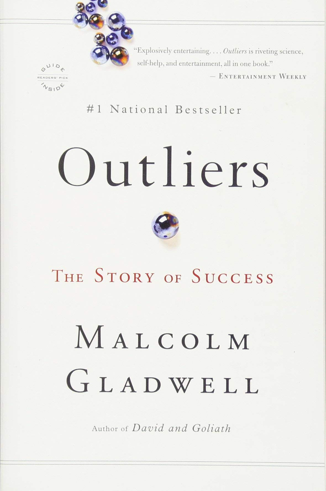

Library › Psychology & People
Outliers — Summary & Key Lessons

The story of success — why self-made is a myth, and how hidden advantages, culture, and 10,000 hours actually build outliers.
📖 OPEN THE FULL INTERACTIVE BREAKDOWN →🌐 Read it in Hindi, Hinglish, Gujarati, Tamil & 22 more languages — free, with audio.
💡 The Big Idea
We tell success as a solo biography: gifted individual rises by brains and hustle. Gladwell dismantles the genre. Canadian hockey stars are disproportionately born in January-March (age cutoffs compound tiny maturity edges into elite streams); the Beatles got 10,000 hours in Hamburg dives before anyone knew them; Bill Gates got near-unlimited computer access as a teen in 1968 when almost nobody on Earth did; Jewish New York lawyers born in the mid-1930s hit a demographic and professional jackpot. And culture follows you for centuries: rice-paddy heritage shapes math persistence, honor culture shapes violence, cockpit hierarchy crashes planes. The point isn't that effort is fake — it's that effort needs an opportunity structure, and once you see it, you can build it deliberately.
🧠 The 5 Key Lessons
Lesson 1: The Matthew Effect: Small Edges Compound
Chapter 1: The Matthew Effect
Named for the Gospel line 'to everyone who has, more will be given': tiny initial advantages attract resources that compound into unbridgeable gaps. The demonstration case: Canadian elite hockey rosters are absurdly loaded with January-March birthdays — because the youth cutoff is January 1, so within each age group, the January kid is nearly a year more mature than the December kid. Coaches mistake maturity for talent, select the 'talented' into rep squads with better coaching and triple the practice, and by 14 the manufactured gap is real. The mechanism generalizes: streaming, gifted programs, early hiring — any system that selects 'winners' young converts arbitrary starting differences into permanent ones. Success is less a solo ascent than a series of accumulating advantages, many of them assigned at birth by calendar, zip code, or era.
📖 Example: Gladwell prints the rosters: on one Memorial Cup team, a wildly disproportionate share of players are born in the year's first quarter — a pattern replicated in European soccer, Czech hockey, and (inverted by school cutoffs) academic streaming, where the… Read the full example →
⚡ Do this: Audit the Matthew Effects in your own story — honestly list three compounding advantages you were assigned (birth timing, family, first boss, city). Then flip it forward: find one arena where you're the 'December kid' and either change arenas or manufacture the extra reps the system won't give you.
Lesson 2: The 10,000-Hour Rule (and Its Fine Print)
Chapter 2: The 10,000-Hour Rule
Studying elite violinists, Ericsson found no 'naturals' cruising on talent and no 'grinds' working hard in vain — by twenty, the elites had ~10,000 practice hours, the good ones ~8,000, the future teachers ~4,000. Gladwell's provocative extension: mastery's threshold is so demanding that nobody reaches it alone — 10,000 hours requires an opportunity structure: parents who support, an income (or scholarship) that frees the time, and access to the arena itself. That's the rule's real fine print (often lost in the debates): the hours are necessary, but the CHANCE to log the hours is unevenly distributed — which is why the rule is really an argument about opportunity, not just diligence. When an interviewer asks an outlier their secret, the honest answer is usually: I got to practice more, earlier, than everyone else.
📖 Example: The twin case studies: the Beatles played Hamburg strip-club marathons — eight-hour sets, seven nights a week, 270 nights in 18 months — performing live perhaps 1,200 times BEFORE their 1964 breakthrough (more than most bands manage in a career); 'we got… Read the full example →
⚡ Do this: Compute your hours honestly in your chosen craft (weekly deliberate hours × years). Then engineer the pipeline: what Hamburg — a context forcing massive, varied reps — is available to you? (Daily publishing, weekend gigs, open-source, side clients.) Book it.
Lesson 3: The Trouble With Geniuses: Threshold + Practical Intelligence
Chapters 3–4: The Trouble with Geniuses
IQ works like height in basketball: a THRESHOLD matters (you must be tall enough / smart enough), but beyond ~120, extra IQ buys almost nothing — Nobel laureates come from strong schools, not just the very 'smartest.' What separates outcomes beyond the threshold is PRACTICAL INTELLIGENCE: knowing what to say, to whom, when, and how to get what you want from institutions — a skill set that is largely taught, and taught unevenly. Annette Lareau's class research gives the mechanism: middle-class 'concerted cultivation' trains kids to question authority, negotiate with adults, and customize institutions to their needs; working-class 'natural growth' produces politeness toward and distance from institutions. Same intelligence, different entitlement toolkits — and the toolkit, not the IQ, decides whether brilliance converts into outcomes.
📖 Example: The tragic controlled experiment: Chris Langan, IQ ~195, raised in chaotic poverty — lost his college scholarship over a missed form his mother didn't file, couldn't persuade a dean to move a class, and ended up a bouncer with unpublished theories. Against… Read the full example →
⚡ Do this: Train the convertible skill: this month, make three institutional asks you'd normally avoid (the exception, the discount, the meeting, the reconsideration) — scripted, polite, persistent. If you're raising kids, let them make their own asks to doctors, teachers, and waiters. Entitlement — the healthy kind — is a rep sport.
Lesson 4: Demographic Luck: When You're Born Matters
Chapters 5–6: The Three Lessons of Joe Flom
Zoom out from individuals and generational patterns appear: an outsized share of history's richest people ever were Americans born in the 1830s (young when the railroads and Wall Street transformations hit); tech's founding class clusters around 1955 (Gates, Jobs, Allen, Ballmer, Joy — old enough to catch the 1975 personal-computer dawn, young enough not to be settled at IBM); New York's great takeover lawyers were disproportionately Jewish kids born ~1930 (small Depression cohort → empty schools and thin competition; excluded from WASP firms → forced into 'dirty' litigation work that became the hottest field by 1970). Even 'disadvantages' compound weirdly: the garment-trade parents gave their children a live-in masterclass in meaningful work — autonomy, complexity, and reward-for-effort — the exact traits that make work feel worth the grind.
📖 Example: Joe Flom's arc carries the chapter: rejected by every white-shoe firm, he joined a scrappy start-up firm that took the hostile-takeover work established firms considered beneath them — for twenty years, essentially practicing 10,000 hours of a specialty… Read the full example →
⚡ Do this: Do the era-analysis on yourself: what wave is cresting in YOUR 10-year window (AI tooling, creator economies, India's digital boom)? Identify the 'beneath everyone' work in your field that the incumbents disdain — that's often the specialty history is about to promote.
Lesson 5: Cultural Legacy: The Past Flies in the Cockpit
Chapters 7–9: Plane Crashes / Rice Paddies / Marita's Bargain
Culture is not decoration; it's inherited software running centuries after installation. Korean Air's 1990s crash record traced substantially to POWER DISTANCE: first officers hinting ('the weather radar has helped us a lot') instead of asserting ('we're going to crash into that hill') while captains flew fatal errors — fixed when the airline retrained cockpit communication (in English, flattening the honorific hierarchy) and became exemplary. Rice-paddy heritage explains Asian math performance better than genes: paddy farming rewarded precision and effort-yield linearity ('no one who can rise before dawn 360 days a year fails to make his family rich'), number words are shorter and more logical (making arithmetic literally easier to hold in memory), and persistence on impossible problems tracks the legacy. The redemption case: KIPP schools export the rice-paddy schedule (longer days, longer years) to poor American kids — because the achievement gap is largely a SUMMER gap: poor kids learn as fast during term but lose ground each vacation. Culture is destiny only until it's redesigned.
📖 Example: The Avianca 052 tragedy distills it: circling New York, nearly out of fuel, the Colombian first officer told controllers they were 'running out of fuel' in tones so mitigated that brusque New York ATC never registered an emergency — the plane simply ran dry… Read the full example →
⚡ Do this: Inventory your inherited software: name one cultural legacy (family, region, community) that serves your goals and one that sabotages them (deference? fatalism? feast-or-famine work rhythms?). Keep the first deliberately; write the specific counter-script for the second — mitigated speech, especially, can be untrained one assertive sentence at a time.
✅ 5-Step Action Plan
- List your three compounding advantages honestly; engineer reps where you're the December kid.
- Count your true hours; book your Hamburg — the context that forces volume.
- Practice institutional asks weekly; entitlement is trainable.
- Find the disdained specialty your era is about to promote.
- Debug one inherited cultural script with a written counter-script.
💬 Best Quotes from Outliers
- “No one — not rock stars, not professional athletes, not software billionaires — ever makes it alone.”
- “Practice isn't the thing you do once you're good. It's the thing you do that makes you good.”
- “Success is a gift. Outliers are those who have been given opportunities — and who have had the strength and presence of mind to seize them.”
Interactive version: mark lessons as read, listen in your language, share quote cards.